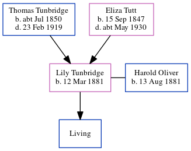

Lily Oliver (née Tunbridge) 1881 -
[ Home ] | [ Calendar ] | [ Surnames Index ] | [ Errors ] | [ Family History ]A post office clerk and the 2nd of 5 children of Thomas Tunbridge (a dairyman) and Eliza Tutt (a general servant), Lily Tunbridge, the first cousin twice-removed on the father's side of Nigel Horne, was born in Hougham, Kent, England on 12 Mar 18811,2,3,4 and. She married Harold Oliver (a railway porter with whom she had 1 surviving child, ) Christ Church in Hougham on 8 Jun 19085.
During her life, she was living at her birthplace in 18811 and on 5 Apr 18918; at 5 Eaton Road, Dover, Kent, England on 31 Mar 19017; at 22 Clarendon Street in Dover on 2 Apr 19116; and at 11 Clarendon Street in Dover on 29 Sept 19394.
Parents
- Thomas was born c. Jul 1850
- Eliza was born on 15 Sept 1847
Citations
- 1881 England Census Online publication - Provo, UT, USA: The Generations Network, Inc., 2004. 1881 British Isles Census Index provided by The Church of Jesus Christ of Latter-day Saints © Copyright 1999 Intellectual Reserve, Inc. All rights reserved. All use is subject to the (Relation to Head of House: Daughter)
- 1891 England Census Online publication - Provo, UT, USA: The Generations Network, Inc., 2005.Original data - Census Returns of England and Wales, 1891. Kew, Surrey, England: The National Archives of the UK (TNA): Public Record Office (PRO), 1891. Data imaged from The National
- 1901 England Census Online publication - Provo, UT, USA: The Generations Network, Inc., 2005.Original data - Census Returns of England and Wales, 1901. Kew, Surrey, England: The National Archives of the UK (TNA): Public Record Office (PRO), 1901. Data imaged from the National
- 1939 Register - Findmypast (was the wife of the head of the household)
- England & Wales marriages 1837-2008 - Findmypast
- 1911 Census for England & Wales - Findmypast (was age 30 and the wife of the head of the household)
- 1901 England, Wales & Scotland Census - Findmypast (was age 20 and the daughter of the head of the household)
- 1891 England, Wales & Scotland Census - Findmypast (was age 10 and the daughter of the head of the household)
Media
England & Wales births 1837-2006 - BMD/B/1881/2/AZ/000581/260
England & Wales marriages 1837-2008 - BMD/M/1908/2/AZ/000397/001
Kent, Canterbury Archdeaconry marriages 1538-1928 - GBPRS/CANT/M/97058715/2
1939 Register Transcription - TNA-R39-1709-1709A-025-37
1901 England, Wales & Scotland Census - GBC/1901/0004891857
1891 England, Wales & Scotland Census - GBC/1891/0005982760
Family Tree
Map
Generated by ged2site. Last updated on Jul 3, 2024
Known Issues
May have been living with mother on 1881, but the addresses don't match or aren't detailed enough to be sure
May have been living with father on 1881, but the addresses don't match or aren't detailed enough to be sure
May have been living with mother on 5 Apr 1891, but the addresses don't match or aren't detailed enough to be sure
May have been living with father on 5 Apr 1891, but the addresses don't match or aren't detailed enough to be sure